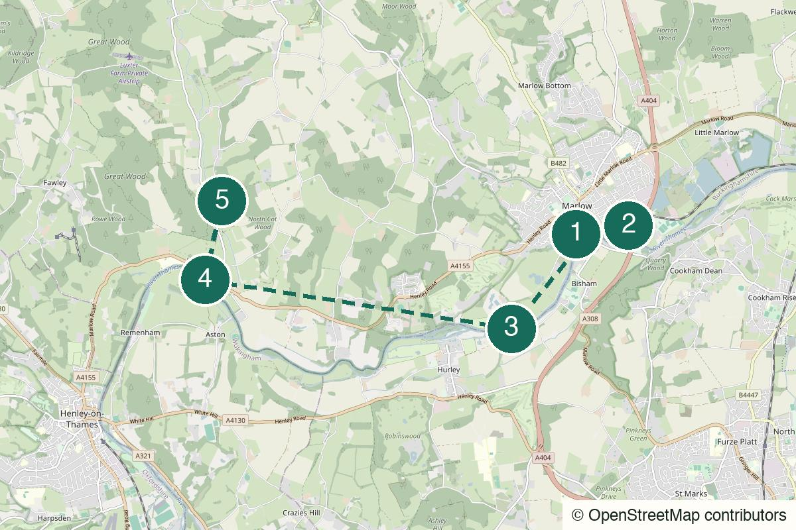

Outside London Not yet field-walked
Chesham to Rickmansworth
A full Met-line day for a rare clear river, valley villages and one proper pub pause before the long ride home.
Start Chesham Underground station
Not yet field-walked · verify live details
A train-out Thames walk for river meadows, two locks, a proper village pub and the satisfying simplicity of walking back the way you came.
Desk-checked or awaiting another field walk – details not yet reconfirmed.
Desk-checked from current operator, National Trails and venue information in July 2026. This is a prototype rather than a claimed personal walk: confirm path conditions, any Thames Path diversions and the return train before you leave London.
No field notes from readers yet — share one if you walk it.
From London Paddington, travel to Maidenhead and change for Marlow. Services and engineering work change, so use the operator journey planner on the day.
Marlow rail station – Leave via Station Approach.
Higginson Park, Marlow
Open detailed route (opens in a new tab)
Prototype route: walk the signed Thames Path out to Hambleden Lock and return by the same line. It is deliberately not supplied as a fictional continuous Google Maps route or GPX. Check the official trail, live conditions and any diversion before setting out.
We never ask for your location.
Leave the station, pass through Marlow before it has had time to become a shopping trip, and let the Thames do all the planning. The river gives you locks, water meadows and enough space to talk or not talk. Hambleden is the pause, not the finish line: eat, look at the village, then follow the water back until Marlow and the train feel like the only reasonable ending.
Not a wilderness hike, a hidden restaurant discovery or a route to attempt in trainers after a wet week.
Good for a second or third date only when both people actively want a long walk. The out-and-back shape is low-pressure, but the distance is real.
Best for two to four people who agree in advance that the pub is one stop, not an all-afternoon referendum.
Very strong solo in clear weather: the navigation is intentionally simple, but download or screenshot the official trail information before signal becomes a question.

Marlow station, Station Approach, SL7 1NT
From the start From the station, use the live walking route into Marlow and set Higginson Park as the first clear riverside anchor.
Do the practical things here: water, a snack, a toilet if you can find one. Once you enter the park, stop treating the day as a town visit and look for the signed Thames Path.
Walk here from the station to Marlow rail station → Higginson Park (opens in a new tab)
Marlow Bridge and Higginson Park, Marlow SL7
From the previous stop From Higginson Park, follow the official Thames Path signs upstream. Do not improvise a river crossing; use the marked path and live trail information.
The town falls away quickly. This first stretch is the calibration: boats, meadow edges and enough space to decide whether the day wants conversation, headphones or neither.
Walk from the previous stop to Marlow Bridge and the Thames Path (opens in a new tab)Official information for Marlow Bridge and the Thames Path (opens in a new tab)
Temple Lock, River Thames near Marlow
From the previous stop Stay with the signed Thames Path. At the lock and footbridge, use the official trail or live walking map to confirm the correct side of the river before continuing.
A useful halfway-feeling without a café-script. Pause for the lock, top up water and keep going only if the weather and pace still make the full Hambleden version feel good.
Walk from the previous stop to Temple Lock and footbridge (opens in a new tab)
Hambleden Lock and Mill End, near Hambleden RG9
From the previous stop At Hambleden Lock, follow the public crossing and the live map into Mill End, then continue carefully on the lanes to Hambleden village. Check any local access changes before crossing.
The visual reward: lock, weir, the old mill and the feeling that the river has briefly moved the country around you. This is the point to choose between a short village detour or an immediate return.
Walk from the previous stop to Hambleden Lock, Mill End and the village (opens in a new tab)
Hambleden village, RG9 6RP
From the previous stop From Mill End, use the live walking route into the village. After the stop, return to Hambleden Lock and retrace the signed Thames Path to Marlow; do not rely on an unverified rural bus as the default exit.
A proper village-pub anchor, but do not let lunch turn the return into a negotiation with daylight. Treat it as a scheduled pause, then take the same generous river line back to the station.
Walk from the previous stop to The Stag & Huntsman, Hambleden → return to Marlow (opens in a new tab)Official information for The Stag & Huntsman, Hambleden → return to Marlow (opens in a new tab)
A mostly level riverside walk on the signed Thames Path: firm in dry weather, with meadow and towpath sections that can become muddy or waterlogged after heavy rain.
Expect mud and occasional standing water after sustained rain. Waterproof footwear is sensible outside dry spells.
The river meadows have little shelter. Bring an extra layer when it is windy, even on a sunny forecast.
Very limited on the main route, but use care on the final lanes into Hambleden village.
Do not rely on this as a stile-free access route; use the live National Trails information for current path details.
Carry water and a snack. The village pub is a planned stop, not a guarantee of immediate food or a table.
Use facilities in Marlow before setting out; do not depend on public toilets along the countryside section.
Usually usable but do not assume it will be perfect in every meadow or wooded edge.
The Stag & Huntsman lists lunch service 12–3pm; check the current kitchen hours and reserve if a sit-down lunch matters.
For the shorter version, turn around at Temple Lock rather than continuing to Hambleden. It keeps the river rhythm and returns you to Marlow without relying on a rural bus.
Nearest practical station: Marlow rail station
Retrace the signed Thames Path to Marlow, then use the live route from Higginson Park back to the station. Check the final Marlow–Maidenhead connection before committing to a long pub stop.
Earlier exit: Mill End, by Hambleden Lock – There is no rail station here; only use this as an exit after checking a live local bus or arranging a taxi. The reliable default is to walk back to Marlow.
A dry spring, summer or early-autumn day
Carry water and a snack. Plan the village pub, but check opening and kitchen times before treating it as your only meal source.
Marlow to Temple Lock and back: the sensible choice if rain, late trains or low energy make a 19 km day feel performative.
The complete Marlow–Hambleden return with the lock, village and one long pub pause in the middle.
Use the Temple Lock turnaround or postpone. Do not turn a flooded-path warning into a personality test.
Take your time in the village, then return by the same path while there is still comfortable daylight. The full route does not need an extra dinner in Marlow.
Turn around at Temple Lock for the cleanest early finish. From Hambleden, the reliable exit is walking back to Marlow unless live local transport says otherwise.
The river takes you out; walking it back makes the day stick.
Help keep it useful
Closed gates, changed hours and the point where you bailed are more useful than polite applause.